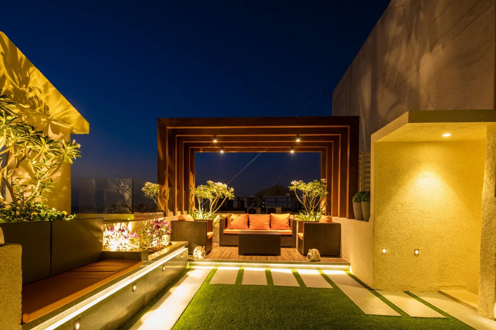
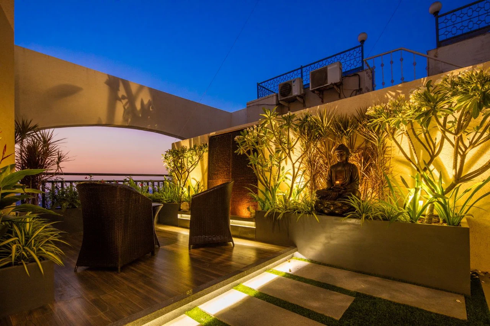
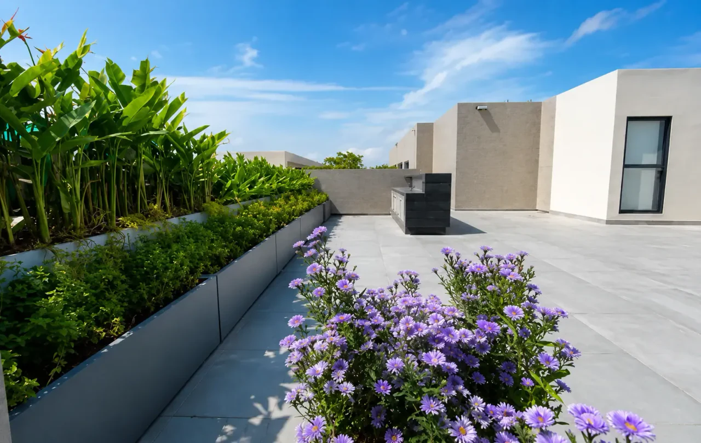

Rustomjee Paramount, Khar
Terrace planting beds with built-in timber seating, flowering shrubs and a sculptural wall planter, set on polished stone paving.
View project
Terrace spaces turned into usable, attractive green spaces.


A terrace can become more than an unused surface. 7 Petals develops terrace garden solutions that combine plantation, hardscape elements, irrigation and practical maintenance considerations.
Every terrace is different. We start with a detailed inspection of structural capacity, drainage, waterproofing, sunlight and wind, then create a design that is usable, attractive and sustainable.
Unused rooftops become areas for relaxing, family time or entertaining.
Plants absorb pollutants and release oxygen.
Planting helps lower rooftop temperatures.
A well-designed rooftop garden adds to the appeal of a property.
Terrace gardens support urban biodiversity and rainwater absorption.
Greenery and natural elements give an escape from the city.
Structural capacity, drainage, waterproofing and sunlight are evaluated.
Greenery, seating, hardscape and irrigation are planned together.
Plants are chosen for the climate and the level of maintenance.
Planters, decking, lawns, lighting and irrigation are installed.
Annual maintenance support keeps the garden healthy.


Terrace planting beds with built-in timber seating, flowering shrubs and a sculptural wall planter, set on polished stone paving.
View project